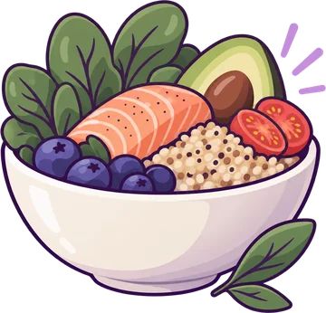
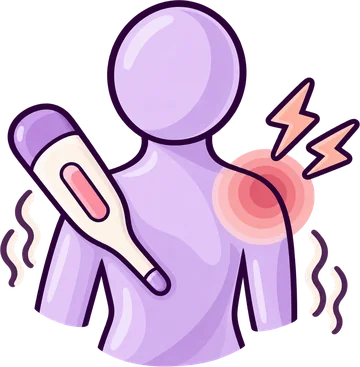
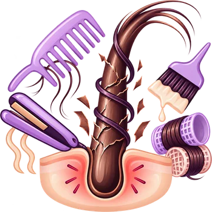
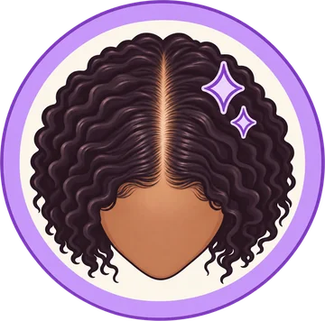
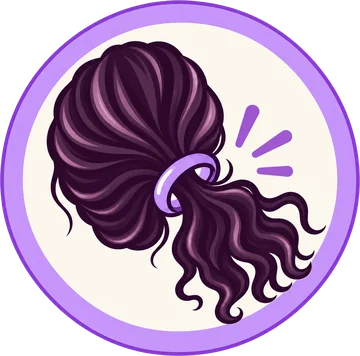

Hair loss is complicated.
Your next step doesn't have to be.
Stop guessing what your hair needs.
Iron. Hormones. Stress. Your diet. Your medications. Your scalp. Your styling. Everything intertwines and contributes to your hair loss.
So I created a Navigator that helps you figure out what may deserve your attention, and know what to do next.
Free20 questionsPersonalized results
You've probably already heard a hundred things you "should" be doing.
- Take biotin.
- Check your iron.
- Eat more protein.
- Try minoxidil.
- Fix your hormones.
- Lower your stress.
- Buy this serum.
- Stop eating that.
Some of it may matter for you.
Some of it may not.
You don't need more things to try.
You need to know what actually deserves your attention. Show Me Where to StartLook at the bigger picture
There's more to hair loss than hair.
DEEP ROOTS helps you look at nine areas that may hold clues about what's happening with your hair.
You don't have to sort through all of this by yourself.
Get My Hair Roadmap
Diet & Deficiencies- Endocrine Imbalances
- Emotional & Mental Stress

Physical Stress & Illness- Reactions to Medications
- Other Chronic Conditions

Overprocessing & Tension- Triggers in Your History
- Shared Family Patterns
You don't have to sort through all of this by yourself.
Get My Hair RoadmapOkay, so what do you actually do?
Follow my ROOTS framework for Recovery.
- Recognize the root cause
-
 Optimize nutrition & lifestyle
Optimize nutrition & lifestyle
-

Optimize scalp -

Tame tension - Soothe stress
Not every step will look the same for every woman. And not everything will be something you can fix on your own.
But you must:
Understand what's going on. Do what you can. Get help with the rest.
So here's a path forward.
-
See the bigger picture
Look beyond your hair and see what else may be going on in your body.
-
Know what needs your attention
Focus on what actually matters for YOU.
-
Take action where you can
Do your part and work on the things that are within your control.
-
Get help when you need it
Bring in the professionals for the things you can't solve alone.
Start with the free DEEP ROOTS Navigator.

Hi, I'm Holly
I'm just a girl who lost her hair too.
My own hair-loss journey has taken me through doctor's appointments, bloodwork, a biopsy, treatments, supplements, nutrition changes and a whole lot of research. And somewhere along the way, I realized how easy it is to spend your time, money and energy trying things without ever feeling sure you're doing the right thing.
I happened to already be a Registered Dietitian when my hair started falling out, so nutrition was one piece of the puzzle I knew how to investigate. And even with having this background, there were some things I didn't know (like how important it is to have ferritin the optimal range, not just "normal").
But hair loss has taught me something much bigger than nutrition:
It's really just a revelation of what is happening in your body, and you cannot control everything that happens to your body. But there are some things you can and must take action on.
That's the philosophy behind The Hair Loss Nutritionist.
I don't have all the answers. I don't have a miracle cure. And I'm not going to tell you that every hair problem can be fixed with food or supplements.
What I can do is share what I know, help you make sense of the information in front of you, and give you tools to participate in your own recovery.
Read My StoryYour hair is changing. What are you going to do next?
You don't need another random product, supplement or list of things that might help.
Start by figuring out what deserves your attention.
Take the free DEEP ROOTS Navigator to look at your bigger picture and get personalized next steps.
Get My Hair RoadmapFree20 questionsPersonalized results